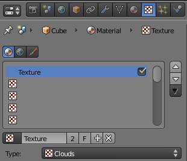
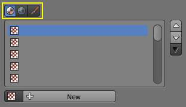
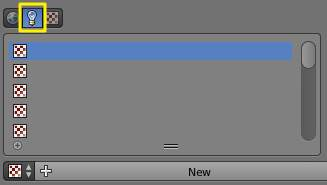

Assigning a 纹理¶
This page just shows how to add a texture to a slot. The textures’ commons options are explained here.
Choosing the 纹理 tab¶

{kind=link}
纹理 panel.
In the Properties editor, choose the 纹理 tab: this will show the 纹理 panels.
Choosing the 纹理 data type¶

{kind=link}
纹理 panel with buttons for Material, World, and Brush textures highlighted.
The three buttons Material, World, Brush at the top of the texture panel indicate the texture data type, that is, the kind of texture that is being edited.

{kind=link}
纹理 panel with button for Lamp textures highlighted.
纹理 Slots¶
The list below these buttons represent the Stack of textures that we can manage. It can have up to eighteen 纹理 Slots:
- Tick or untick a texture to enable/disable it.
- Use the three buttons on the right side to move individual textures up and down in the stack or to copy/paste material’s settings between slots.
Creating a new 纹理 Data-Block in a new 纹理 Slot¶
Select an empty slot, then click on the New button.
This will do two things:
- it will create a new texture data-block
- also, it will add a new slot in the textures stack
Creating a new 纹理 Data-Block in a non-empty slot¶
Select a non-empty slot, then click on the Plus button.
This will do two things:
- it will create a new texture data-block, with a new name, by making a copy of the texture data-block assigned to the selected slot
- it will assign this new data-block to the selected slot
Sharing a 纹理 Data-Block in a non-empty slot¶
- Select a non-empty slot, then click on the Browse button. This will open a menu showing all the available 纹理 data-blocks in this file.
- Choose a texture data-block in the menu to assign it to the selected slot. This will share the chosen texture with more than one object, hence the Number of users shown in the texture data-block will increase by one.